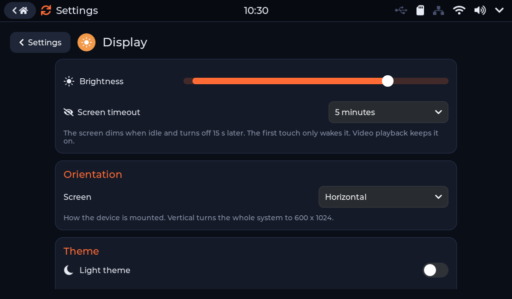
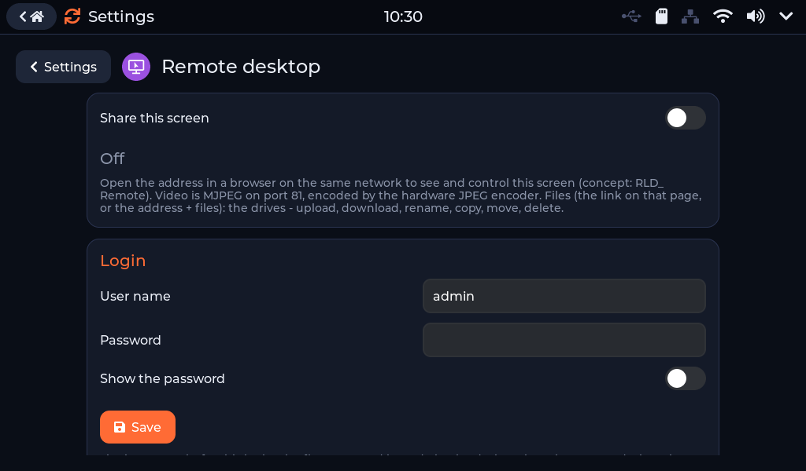

ฟีเจอร์
Reload OS ทำอะไรได้บ้าง
ทุกอย่างในหน้านี้เป็นส่วนของระบบเอง ทุกผลิตภัณฑ์ที่สร้างบน Reload OS มีครบ บนทุกบอร์ดที่มีฮาร์ดแวร์รองรับ รายการที่มีป้าย รุ่นถัดไป มีอยู่ในระบบแล้ว และจะมากับรุ่นถัดจาก 1.4.0
หน้าจอหลัก
- แถบสถานะ, หน้ารวมแอปที่ลากจัดลำดับได้, ตั้งค่าด่วน
- ธีมมืดและสว่าง; ติดตั้งแนวนอนหรือแนวตั้ง หมุนจอได้ใน Settings โดยไม่ต้องรีสตาร์ต รุ่นถัดไป
- คีย์บอร์ดบนจอชุดเดียวทั้งระบบ: ปุ่มใหญ่, แถวตัวเลข, ขยายปุ่มที่กด; ภาษาไทย (เกษมณี) คู่กับอังกฤษ รุ่นถัดไป
- ฟอนต์ภาษาไทย, ความสว่าง, ปิดจอเมื่อไม่ใช้, หน้าจอเริ่มระบบ
- แอปเปิดอัตโนมัติ: เครื่องเปิดแอปของตัวเองเมื่อเริ่มทำงาน
แอป
- Settings - การตั้งค่าทั้งหมดของเครื่องในแอปเดียว
- Files - ข้อความ, รูปภาพ, วิดีโอ MJPEG / AVI, เสียง MP3 / WAV และ log ของระบบ; คัดลอกและย้ายข้ามไดรฟ์
- Web - หน้าเว็บที่ Chrome บนเซิร์ฟเวอร์เรนเดอร์ แสดงและใช้งานบนตู้ รุ่นถัดไป
- Tools ใน Settings - กล้อง, Monitor พอร์ตซีเรียล, บันทึกเสียง, อ่านบัตรประชาชน
- แอปจากแฟลชไดรฟ์และการ์ด SD โหลดเมื่อเปิดใช้ - เขียนแอปเองได้
เครือข่าย
- Wi-Fi และ Bluetooth LE - ผ่านชิปร่วม ESP32-C6 บนบอร์ด ESP32-P4 และของชิปเองบนบอร์ด ESP32-S3
- Ethernet แบบ DHCP หรือกำหนด IPv4 เอง
- ฮอตสปอต: ใช้เครื่องเป็นจุดกระจาย Wi-Fi และแชร์อินเทอร์เน็ตจาก Ethernet หรือ Wi-Fi
- เวลาจากเครือข่าย (NTP) และนาฬิกาแบตเตอรี่เก็บเวลาไว้ตอนปิดเครื่อง บนบอร์ดที่มี
USB และอุปกรณ์
- USB host: แฟลชไดรฟ์, คีย์บอร์ดและเครื่องสแกนบาร์โค้ด / QR, เมาส์, ตัวแปลงซีเรียล (CH34x, CP210x, FTDI, CDC-ACM), เว็บแคม UVC, เครื่องอ่านสมาร์ตการ์ด, เครื่องพิมพ์
- การพิมพ์: เครื่องพิมพ์ใบเสร็จ ESC/POS - พิมพ์ภาษาไทยและ QR ได้ -, PCL, PostScript, ZPL และ TSPL
- ใช้ตัวเครื่องเป็นไดรฟ์ USB ให้คอมพิวเตอร์: การ์ด SD, แฟลชไดรฟ์ของเครื่อง, RAM disk และ USB stick ที่เสียบเครื่อง รุ่นถัดไป
- กล้อง, ลำโพง (เสียงสัญญาณ, WAV, MP3) และบันทึกเสียงจากไมโครโฟน
ตัวตนและข้อมูล
- บัตรประชาชน: เลขบัตร, ชื่อ, ที่อยู่ และรูปถ่าย - ผ่านเครื่องอ่านบัตร USB หรือช่องเสียบบัตรบนบอร์ด
- MySQL client: แอปส่งข้อมูลเข้าฐานข้อมูลได้โดยตรง
- เครื่องสแกน QR และบาร์โค้ดที่พิมพ์แบบคีย์บอร์ด USB: ส่งทุกการสแกนให้แอป
ดูแลผ่านเบราว์เซอร์
- Remote desktop: ดูและสั่งงานหน้าจอจากเบราว์เซอร์ พร้อมชื่อผู้ใช้และรหัสผ่าน
- จัดการไฟล์: อัปโหลด, ดาวน์โหลด, คัดลอก, ย้าย และลบ ในทุกไดรฟ์
- การตั้งค่าของเครื่องและของแต่ละแอปเป็นฟอร์มบนเว็บ เบาพอสำหรับเครือข่ายช้า รุ่นถัดไป
- อัปเดตเฟิร์มแวร์จากการ์ด SD หรืออัปโหลดผ่านเครือข่าย; Check online หาเฟิร์มแวร์ล่าสุดของบอร์ด รุ่นถัดไป
- สถานะเครื่องผ่านเครือข่าย: จำนวนรีสตาร์ต, การขัดข้อง และครั้งล่าสุด
ทำงานได้โดยไม่มีคนเฝ้า
- อัปเดตเฟิร์มแวร์แบบย้อนกลับได้: เฟิร์มแวร์ใหม่ที่เปิดไม่ขึ้นจะถูกแทนด้วยตัวก่อนหน้า
- ตัวนับการรีสตาร์ตและการขัดข้อง พร้อมการขัดข้องครั้งล่าสุด ใน Settings › About และผ่านเครือข่าย
- Safe mode: ขัดข้องสามครั้งติดกัน แอปเปิดอัตโนมัติจะไม่ถูกเปิด
- หน้าจอที่ค้าง 60 วินาทีทำให้เครื่องรีสตาร์ต; ทัชสกรีนที่หยุดตอบจะถูกรีเซ็ตและค้นหาใหม่
- ไฟล์เฟิร์มแวร์ของบอร์ดอื่นจะถูกปฏิเสธ
- รายงานหน่วยความจำและ stack ของทุก task ลง log ทุก 10 นาที รุ่นถัดไป
สำหรับสายการผลิต
- Factory test ใน Settings › About: ตรวจทุกส่วนของบอร์ด, ทดสอบร่วมกับพนักงานสี่ข้อ, รายงานลงการ์ด SD ตั้งชื่อตาม MAC ของเครื่อง
- ไฟล์รุ่นพร้อม checksum: factory image ของแต่ละบอร์ดสำหรับเครื่องใหม่ และไฟล์อัปเดตสำหรับเครื่องที่ใช้งานอยู่
- เลขรุ่นเดียวทุกที่: หน้าจอเริ่มระบบ, Settings › About, หน้าต่างอัปเดต และชื่อไฟล์
ทดลองใช้ฟรี เปิดใช้งานรายเครื่อง
- ก่อนเปิดใช้งาน หน้าจอจะแสดง "Reload OS - Not activated"
- เปิดใช้งานบนเครื่อง: จ่ายครั้งเดียวต่อเครื่องด้วย PromptPay QR ใน Settings › About › License
- หรือไฟล์ license ที่ Reloader ลงลายมือชื่อ บนการ์ด SD
Settings ที่พอดีกับจอ
การเชื่อมต่อ ตัวเครื่อง และเครื่องมือ อยู่ในหน้าเดียว ทุกหน้าจัดวางให้พอดีกับจอของบอร์ดทั้งแนวนอนและแนวตั้ง
- Wi-Fi, Ethernet, Hotspot, Bluetooth, Remote desktop
- Display, Sound, Storage, USB, Date & time, About
- Camera, Monitor, Recorder, ID Card, Web

หน้าจอในเบราว์เซอร์
เปิด Remote desktop ตั้งชื่อผู้ใช้และรหัสผ่าน แล้วสั่งงานตู้จากเบราว์เซอร์ใดก็ได้ในเครือข่าย พร้อมตัวจัดการไฟล์ของทุกไดรฟ์
